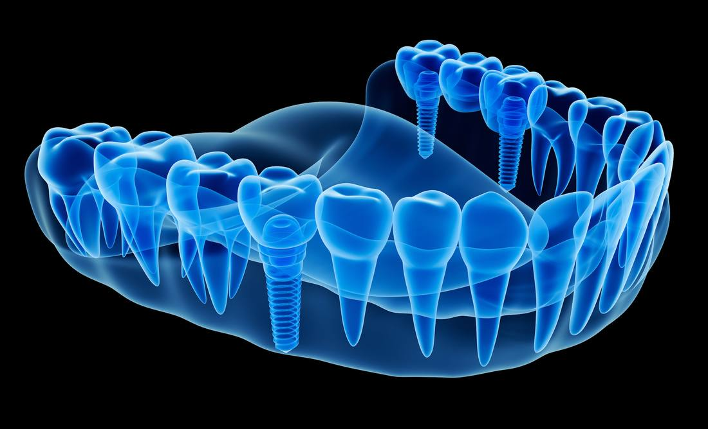
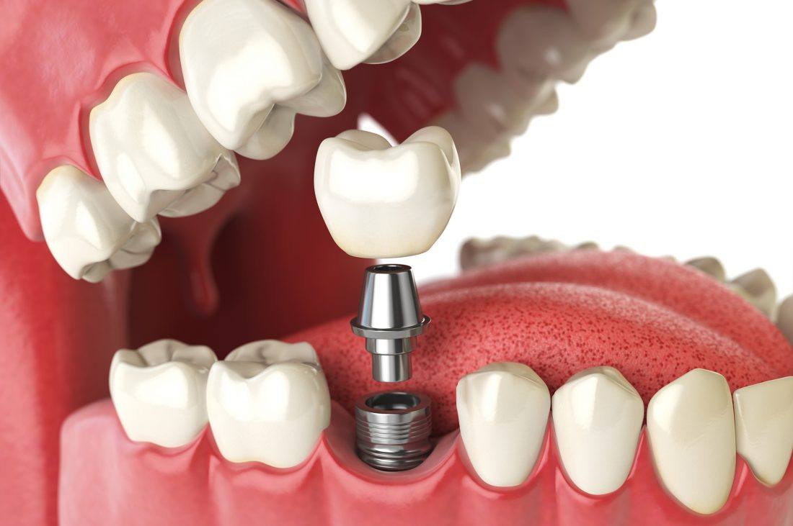
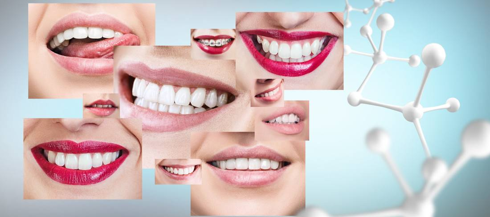

30 Temmuz 2018
Zigomatik implantlar

Merhabalar,geçtiğimiz haftalarda American R&D Institute of Implantology (ARDII) davetlisi olarak Kanada Toronto'da bilimsel bir sempozyumda zigomatik implantlar hakkındaki bilgi ve tecrübelerimi paylaştığım bir sunum gerçekleştirdim. Umarım ülkemizi bir çok ülkeden gelen dişhekimlerinin önünde en iyi şekilde temsil etmişimdir.
ARDII bir çok ülkeden dişhekimlerinin ve bilim insanlarının oluşturduğu, bilgi ve tecrübelerini paylaşıp, yeni araştırma projeleri üreterek implantolojinin gelişmesini amaçlayan bir topluluktur. R&D research ve development yani araştırma ve geliştirme kelimelerinin kısaltılmasıdır. Dişhekimliğinde kullanılan implantlar onlarca senedir uygulanmaktadır. Hastalara daha basit, kabul edilebilir çözümler sunmak amaçlı olarak sürekli araştırma ve geliştirme çalışmaları yapılmakta ve bu çalışmaların sonucunda farklı implant tipleri ve uygulamaları hastalara sunulabilmektedir.
Benim Toronto'da yaptığım sunumda Zigomatik İmplantları ele aldım.İsterseniz soru-cevap şeklinde bu tedavi protokolünü ele alalım.
Zigoma implantları kısaca zigoma kemiğine yerleştirilen implantlara verilen isimdir. Zigomatik kemik elmacık kemiği denilen gözün dış alt tarafından başlayarak bir kavis çizerek kafatasına bağlanan bir kemiktir. İç ve alt tarafta da üst çene kemiğine bağlanır. İşte üst çeneden başlayarak elmacık kemiğine yerleştirilen 35mm -50mm arasında değişen uzunluklarda (normal dental implantlar ortalama 7-13 mm arasında ) implantlara Zigomatik İmplantlar denir.
Cevap çok basit üst çenede implant koyabileceğimiz kemik mevcut değil. İmplant yaptırma amaçlı gelen hastalarımzda özellikle bütün dişlerini kaybetmiş uzun süredir dişsizlik olduğu vakalarda her zaman için yeterli kemik bulamamaktayız. Bunun yanında trafik kazaları, ateşli silah yaralanmaları, kanser & kist gibi patolojiler nedeni ile hastalarda üst çenede büyük miktarlarda kemik kayıpları görebilmekteyiz. Bir kaç sene öncesine kadar bu tip durumlarda hastalara implant yapmak için sinüs lift operasyonu, iliak yani kalça kemiğinden aldığımız blok kemik transferi gibi farklı cerrahi seçenekleri hastaya sunarak ilk önce kemik oluşturma işlemi daha sonra ise implant uygulaması yapıyorduk. Cerrahi işlemlerin sayısının artması komplikasyon oluşma riskini artırmasına, başarı yüzdesinin düşmesine ve çok uzun süren tedavilere sebep olabiliyordu.
Artık Zigomatik İmplant seçeneği ile bir çok farklı cerrahi işlemden kurtularak hastaya tek seferde implantlarını uygulayıp, 1-2 gün içerisinde sabit geçici protezlerini yükleyip tedaviyi kısa bir sürede bitirebiliyoruz. Çenede arkadaki 2 zigoma implantı ile desteği sağlayıp ön bölgelerde gene standart implantlar kullanarak tedavilerimizi tamamlayabileceğimiz gibi eğer hiç implant yerleştirebileceğimiz kemik olmadığında 4 veya 6 adet zigomatik implanttan destek alarak tedaviyi bitirebiliyoruz.
20 Aralık 2017
İmplant tedavileri ve reklamlar (2)

Bugün implantlar ile ilgili söylenen ve bilinen doğruların içindeki yanlışları , yanlışların içindeki doğruları kendi bakış açımdan sizlere iletmeye devam etmeye çalışacağım mümkün olduğunca kısa ve basit tutmaya çalışmakta zorlandığım bir durum. Umarım faydalı olur.
Daha önceden bahsettiğim gibi son yıllarda implant markalarında ve bunların ticareti yapan kurum ve kişilerin sayısında çok yüksek bir artış olmuştur. Hastalarda en çok karşılaştığımız durumlardan bir tanesi implantın markası ve menşei ile ilgili bilgi almak. Zira implantın markasının maliyetlere yansıması azımsanmayacak kadar yüksektir. Bazı durumlar iki implant markası arasındaki fiyat farkı 5 katına kadar çıkabilmektedir.
Peki implantların markaları ve menşeileri çok önemli midir? Cevabım hem evet hem hayır olacaktır.
İlk olarak şunu açıklayayım bir implantın Alman malı, İsveç malı veya yerli üretim olması çok önemli değildir. İmplantın hangi ülkeden geldiğinden daha çok markası önemlidir. Ülkemizde üretilen bazı implantların ithal malı bir çok implanttan daha kaliteli olduğunu söyleyebilirim. Çin olmasa bile Güney Kore üretimi güzel, innovatif implantlar bulunmaktadır. Dikkat edilmesi gereken implantın markasıdır.
Kaliteli olarak tanımlanan bir çok implant markası uzun bir geçmişe sahiptir. Çok uzun süredir uygulanması bu markalara diğerlerine göre çok daha fazla deneyim ve bilgi sahip olmalarını sağlamıştır. Bu bilgi ve deneyimi ürünlerine yansıtan bir firmanın ürünlerinin başarı oranlarının rakiplerine göre yüksek olması kaçınılmazdır. Çok uzun süredir piyasada olan implant markaları daha kalitelidir diyebiliriz. Fakat yeni bir firmanın ürünlerine kalitesiz demek aynı oranda yanlış olur. 10-15 senelik bir süreç sonrası bu farklar anlaşılır.
Diğer bir konu ise implantı üreten veya getiren firmanın sürekliliğidir. İmplant tedavilerinde sadece implanta değil aynı zamanda üst yapı parçaları, ölçü parçaları , cerrahi ve protetik setler gibi yüzlerce farklı malzeme ve parçaya ihtiyaç duyulmaktadır. Bu işe girip yeterli bilgi sahibi olmayan firmaların kısa sürede battığını veya devrettiğini, hastaların ağızlarında üstlerine diş yapılmasını bekleyen implantlar ile gerekli parçaları bekler iken aylarca dolaştığına, hatta nadir de olsa çözüm bulamadığına da şahit oldum. Düşük kaliteli fakat parçaları mevcut bir implantın, çok kaliteli de olsa parçasını bulamadığınız üstünü yaptıramadığınız bir implanttan çok daha fazla yarar getireceği açıktır.
15 Aralık 2017
İmplant tedavileri ve reklamlar

Diş hekimliğinde implant tedavilerine her geçen gün çok daha fazla başvurulmakta ve hastaların talepleri de aynı yönde artmaktır.Bunun en önemli nedeni implant tedavilerinin köprü, porselen kaplama veya tam damak, çengelli protez gibi adlandırılan konvansiyonel diş hekimliği tedavilerine göre estetik, fonksiyonel olarak hastalara çok daha fazla yarar sağlaması ve hala tam kanıtlanmamış olsa daha uzun ömürlü tedaviler sunmasıdır. Bir başka neden ise implant tedavilerini uygulayan diş hekimlerinin sayısının artmasıdır.
Görece çok daha yeni bir tedavi konsepti olan implant tedavilerini yapan hekim ve kliniklerin sayısı ben mesleğe başladığım dönemlerde sayılı iken aradan geçen 13 senede çok hızlı bir şekilde artış göstermiştir. İmplant tedavilerene olan talep ve implant ticareti yapan firmaların sayısının artması(ve bu firmaların hekimleri implant yapmaya yönlendirilmesi) başlı başına bir piyasa oluşturmuştur.
Hacmi ve rekabet ortamı büyüyen her piyasa gibi maliyetlerin aşağı çekilmesi, yapılan işlerde kullanılan malzemenin ve ortaya konulan işlerin kalitesinde de çok büyük farklar olması kaçınılmaz olacaktır. Fiyatlarda ve yapılan işlerin kalitesindeki dalgalanmaların belli bir süre daha devam edeceği aşikardır. Zamanla kabul edilebilir bir fiyat aralığına oturacağını düşünmekteyim, elbette o zaman bile çok uçlar olacaktır ama bölge, hekim, yapılan implant gibi kriterlere göre ortalama bir fiyat oluşabilir.
Benim bugün bahsetmek istediğim asıl konusu ise bu piyasa içinde pay kapmak için yapılan reklamlar ve bunların gerçeklik payları. Hastalarımdan duyduğum bazı şöyle şöyle bir tedavi varmış ondan yapmıyor musunuz gibi sorulara aşağıda madde madde genel olarak bir cevap verme gayesindeyim
Aynı gün implant ve diş yapıyoruz, 24 saatte dişleriniz hazır, Bugün implant 3 gün sonra dişler
Diş çekilir çekilmez implantın yerleştirilmesi ve üstüne diş konulması mümkündür. Ancak bunun mümkün olabilmesi için herşeyin başında hastanın bizim implantımızı en azından stabil tutabilecek yeterli kemiğe sahip olması gerekir. Diğer bir kriter ise kemiğin kalitesidir. Çok sert taş gibi bir kemik olabileceği gibi içi boş sünger gibi kemik ile karşılaşabilir. İdeal olan ne sert ne yumuşak kemiktir. Eğer implantımız “primer stabilizasyon” yani ilk yerleştirme kuvveti istediğimiz değerlerde kemik içine yerleşmiş ise üstüne geçici bir diş yerleştirebiliriz. İmplant sonrası hemen daimi diş yapılması cerrahi işlem sonrası diş etinde değişiklikler olacağından dolayı uygun değildir.